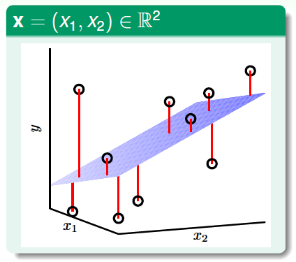
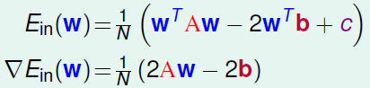
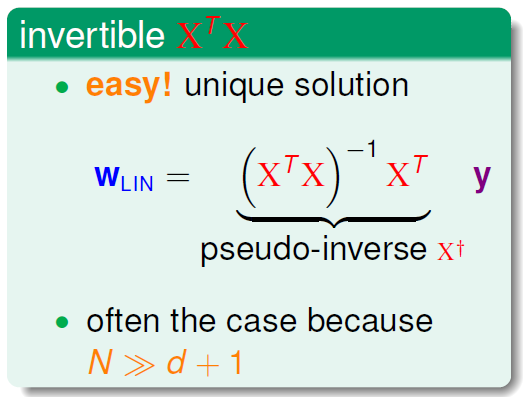
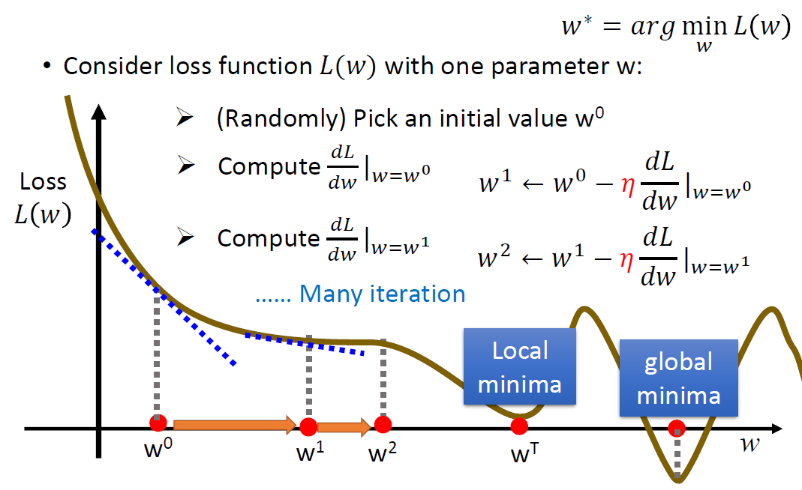

Linear Regression 是利用線性模型來解決 regression 問題的一種方法。
Introduction
線性模型屬於監督式學習的一種，假定原始資料中共有 d 個 feature，即一筆資料 $ x = (x_1, x_2, …, x_d) $ ，則一個最基本的線性模型試圖用一個所有feature的線性組合來描述我們想要預測的目標。
$$ f(x) = w_1x_1 + w_2x_2 + … + w_dx_d + b $$
$$ 使得 f(x_i) \simeq y_i $$
用向量形式可寫為: $ f(x) = W^Tx + b $
其中所要學習的就是 w 和 b 的值，線性模型較為基礎簡單，但好處是有非常好的可解釋性質，根據每個feature對應的 w ，能很好的判斷哪個feature較重要。
Linear Regression利用線性模型，來解決regression的問題，如下圖所示，假設每筆資料包含2個feature ($x_1, x_2$)，則這兩維度和目標y形成的三維空間中，找到的線性模型為一個平面，目標是讓這個平面越符合y的分佈越好，也就是讓所有資料點的y到這個平面的總距離和越小越好(找到一個平面能讓下圖中的紅線總和有最小值)。

Loss Function - MSE
最常見計算這個總距離和(錯誤程度)的方法為 Mean Squared Error (MSE)，假設有N筆資料:
$$ MSE = \frac{1}{N} \sum_{n=1}^N (f(x_n)-y_n)^2 $$
以MSE當作模型的loss function，要學習的目標就是讓這個loss function能盡量越小越好。
至於如何minimize這個loss function，主要有兩個方法可以選擇:
- closed form solution
- gradient descent
以linear regression來說，這兩種方法都能找到最佳解，林軒田教授上課時是教 1 ，而李宏毅教授的課程內容則是教 2，吳恩達的課程則是1、2都有教，而python sklearn當中，linear regression 使用的方法是以 1 來解，至於為什麼會有這個差異，參考網路上的討論，大多人認為因為closed form solution只能用在linear regression上，而gradient descent除了linear regression之外，後面教的logistic regression和神經網路也都會用到，因此兩位教授的教學內容才會選擇直接教gradient descent，畢竟gradient descent也可以解linear regression的，不過在實際應用上，如果要解linear regression，通常還是以closed form solution來解較有效率。
Features Scaling
Closed Form Solution (Normal Equation)
closed form solution利用矩陣的運算來直接求得最佳解，前面的介紹中，模型是由 w 跟 b 係數所構成的 :
$$ f(x) = w^Tx + b $$
這邊為了計算方便，將式子中的 b 當作是 w0，而對應的 x0 為1:
也就是將 $ f(x) = w_1x_1 + w_2x_2 + … + w_dx_d + b $
改寫為 $ f(x) = w_1x_1 + w_2x_2 + … + w_dx_d + w_0x_0 $ 其中 $w_0=b, x_0=1$
而預測的式子寫為 $ f(x) = w^Tx $
目標是 minimize $ E(W) = \frac{1}{N} \Vert{XW - y}\Vert^2$
要minimize E(W)，所要找的為 E(W)對W微分等於0的地方，這個地方會出現極小值，所以具體解法就是用矩陣的運算，找出 $\nabla E(W) = 0$ 的解。

將E(W)展開之後，將不是W的地方先以A 、 b 、 c三個部分來表示，接著再對W取微分

最後可以得到 E(W) 對 W 微分的梯度，能讓這個式子=0的W就是我們要找的目標
因此，最後的closed form solution為
$$ X^TXW = X^Ty $$
其中的X為資料feature矩陣，假設共N筆資料，每筆資料有M個feature，則X就是一個N*M的矩陣
y則是一個vector，為對應的regression目標
X、y都是已知的，以此function就能解出最佳解W
解此function的解法很多種，可以直接以inverse matrix來解，如下圖

但此解法的問題在於 $X^TX$ 要確定是可逆的，並且當N很大時，做inverse matrix相對來說cost很大，參考網路上的討論，建議使用QR分解、SVD等等的計算方式來解此function，會比起直接計算inverse matrix來的有效。
Gradient Descent
根據loss function:
$$ MSE = \frac{1}{N} \sum_{n=1}^N (f(x_n)-y_n)^2 = \frac{1}{N} \sum_{n=1}^N (Wx_n-y_n)^2 $$
如果以 W 跟 loss function 作圖，gradient descent的概念就是對於 W 做微分，得到的值會是該點的斜率，而斜率是負的時候表示W該往右邊移動(加大)，斜率是正的時候表示W該往左邊移動(縮小)，不斷更新W之後最後盡量找到斜率=0的地方，不過這種找法有可能找到的是local minimum而不是global minimum，如下圖。

更新的步驟如下:
- 隨機選擇W初始化的值
- 計算此時對W微分的loss梯度
- 更新 $W \leftarrow W - \eta*梯度 $
- 重複2、3直到一定的次數，或是當第2步驟算出來的梯度為0即可停止
注意在2、3步驟更新時，必須要針對全部的w都計算完loss gradient，再去更新w的值，而不能算完一個gradient舊更新一個w。
Gradient Descent vs Normal Equation
對於 linear regression 來說，兩種方法都能找到適合的解，而兩者的比較大致如下:
Gradient Descent
- 需要設定適合的 learning rate
- 可能需要大量的迭代輪數
- 可能卡在 local minimum
- 當 feature 維度很大時，會比 normal equation有效率，根據吳恩達教授的建議，通常維度大於10000他就會考慮使用 graident descent 而非 normal equation。
Normal Equation
- 不需要考慮 learning rate 和迭代輪數之類的參數
- 需計算逆矩陣，如果 feature 維度過大會導致計算非常複雜。
Python Sklearn實作方式
在python sklearn中，linear regression是以closed form solution來解的，細節可以參考reference第4點，主要是sklearn會調用scipy.linalg.lstsq()來解，而此function再調用C語言Linear Algebra Package中的function，用singular value decomposition(SVD) of A and a divide and conquer method來解這個linear regression問題。
也就是在實際應用上，linear regression還是以closed form solution來解會較有效率。
Reference
- Do we need gradient descent to find the coefficients of a linear regression model
- What algorithm is used in linear regression?
- Why use gradient descent for linear regression, when a closed-form math solution is available?
- sklearn中LinearRegression source code解析
- 林軒田 - 機器學習基石
- 李宏毅 - 機器學習
- Andrew Ng - ML on coursera